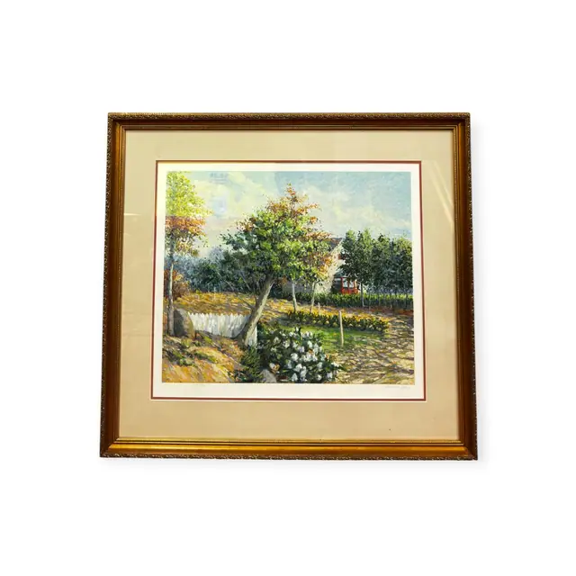
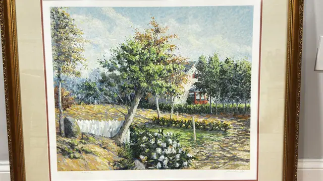
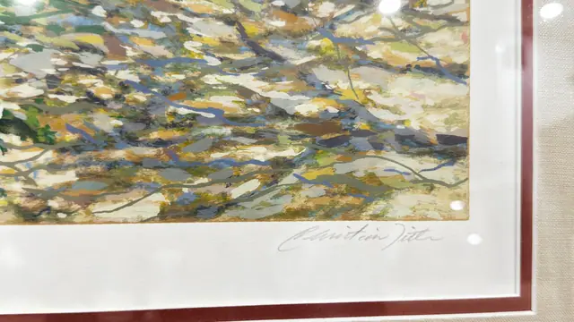
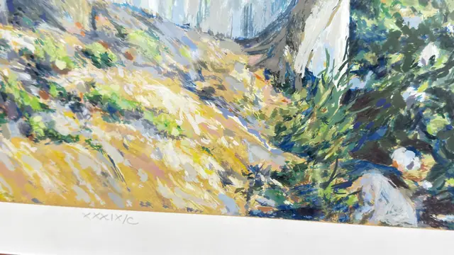
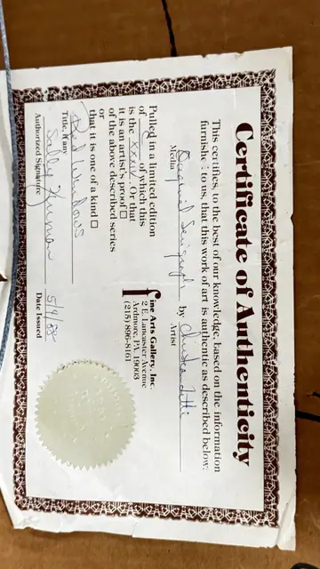

Paintings & Prints
Christian Title Serigraph Red Windows, Signed in the Plate, Framed, 1988
Christian Title · 1988
Price Upon Request





About the Item
Christian Title. A sunlit garden built from short broken strokes of pistachio green, cadmium yellow, cobalt and white, with a young tree at the centre, a bank of white flowering shrubs in the foreground and a red-roofed house glimpsed through the foliage at right. The sky is a stippled blue and the ground a warm ochre path. The surface is flat printed colour with clean unbroken edges and a wide white paper margin, hand-numbered and signed in pencil below the image. Medium: colour serigraph (screenprint) on paper. Signed pencil, lower right of the paper margin, reading "Christian Title". Edition: XXXIX/C (pencil on the print); certificate states edition of C of which this is the XXXIV. Accompanied by a certificate: Certifies an Original Serigraph by Christian Title titled 'Red Windows', pulled in a limited edition of C, this copy numbered XXXIV, authorised signature 'Sally K...' and date issued 5/4/88. Inscribed on the reverse or mount: XXXIX/C; Certificate of Authenticity; Original Serigraph; Pulled in a limited edition of C of which this is the XXXIV. Condition: Bright fresh colour, clean margins, no foxing or toning visible. The certificate is creased and lightly soiled at the edges. Glazing glare in all shots.
Details
- Creator:
- Christian Title
- Creation Year:
- 1988
- Dimensions:
- Height: 32.5 in (82.55 cm)
Width: 35.25 in (89.53 cm)
outside of frame - Medium:
- colour serigraph (screenprint) on paper
- Edition:
- XXXIX/C (pencil on the print); certificate states edition of C of which this is the XXXIV
- Period:
- 20Th
- Condition:
- Offered in the condition shown in the photographs.
- Reference Number:
- VO-245
- Documentation:
- Certifies an Original Serigraph by Christian Title titled 'Red Windows', pulled in a limited edition of C, this copy numbered XXXIV, authorised signature 'Sally K...' and date issued 5/4/88.
- Gallery Location:
- Fine Arts Gallery, Inc., Ardmore, PA